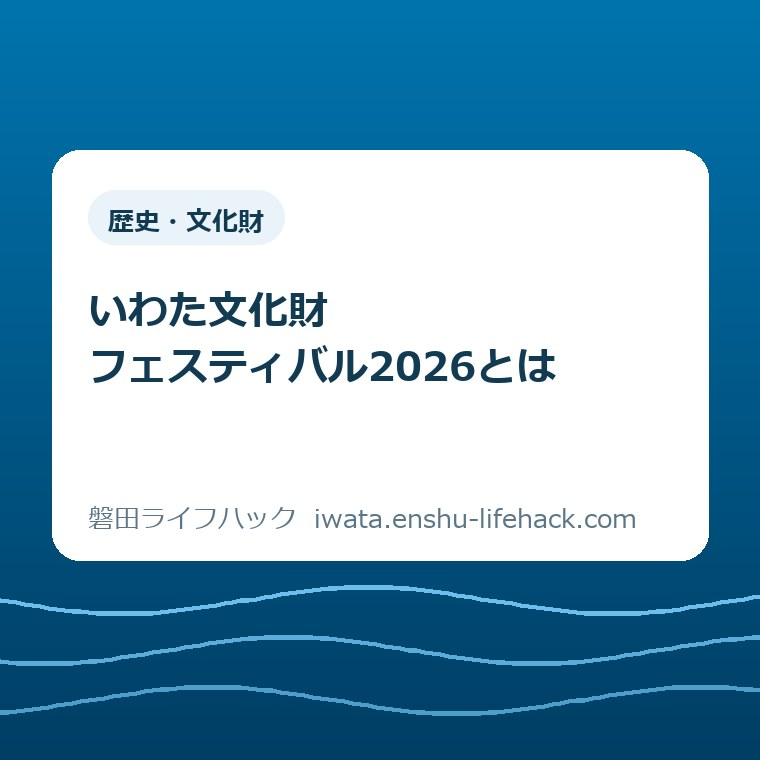

歴史・文化財
いわた文化財フェスティバル2026とは

この記事の要点
Q. いわた文化財フェスティバル2026って、何が分かる行事？
A. いわた文化財フェスティバル2026は、11月29日（日）に埋蔵文化財センターと歴史文書館で開かれる、開館40周年を記念する行事です。参加条件や申込の要否は企画ごとに異なります。発掘後の出土品を守り、調べる仕事を知る機会として、今日は開催日を家族と共有するだけでも十分です。
参加条件は企画ごとに違う行事です
いわた文化財フェスティバル2026は、2026年11月29日（日）に開かれます。磐田市公式の案内では、埋蔵文化財センター開館40周年を記念し、同センターと歴史文書館の二つの施設で開催するとしています。参加条件は企画ごとに異なり、すべてが予約なしで参加できる行事ではありません。
家族で出かける日を一日決めるにも、仕事や学校、習い事、家事との調整が必要です。行事の案内を読むこと自体にも時間がかかります。「せっかく行くなら全部参加しよう」と予定を詰める前に、何を知れる日なのかをつかむところからでよいと私は考えます。
この記事は申込フォームの操作案内ではありません。発掘された品が、見学できる資料として私たちの前に並ぶまでに、どんな仕事があるのか。その入口を、磐田市が公表している企画と施設の役割から整理します。参加を決める際は、リンク先の市公式案内で最新の条件を確認してください。
私は大石浩之（磐田市／不動産業）です。家や土地を扱う立場から見ると、足元に残る昔の暮らしは、地域を知る材料でもあります。ただし、今回の行事に参加した体験や、担当者から聞いた話をここで紹介するものではありません。公表された事実と私の意見を分けて書きます。
開館40周年は、発掘後の仕事を知る入口
磐田市の「施設ガイド 埋蔵文化財センター」によると、センターは市内の遺跡から発掘された土器や石器などを収蔵保管し、調査研究する施設です。1階には展示スペースがあり、市内の代表的な遺跡や遺物の移り変わりを時代ごとに追えるようになっています。
意外に感じる方もいるかもしれませんが、土の中から品物を見つけることだけがセンターの仕事ではありません。市の施設案内には、保管すること、調べること、展示することがそれぞれ示されています。出土品の価値は、掘り出した瞬間だけで完結しない。私は、この点を今回の行事の読みどころにしたいと考えます。
収蔵保管は、資料を施設で守る役割です。調査研究は、資料を調べる役割です。展示は、来館者が地域の歴史に触れる窓口になります。この記事では、特定の出土品にどの処置をするか、保存に何年かかるかまでは述べません。今回確認した市のページだけでは、個々の作業内容を確定できないためです。
40周年という数字も、単に長く続いたという紹介だけではもったいないと感じます。私が知りたいのは、地域の資料を手元に残し、人が調べ、人に伝える役割です。施設の沿革を想像で補うより、今の施設案内に明記された仕事を確かめる方が、家族で話す材料になります。
市内の具体的な発掘資料に関心が向いたら、既存記事の中原B古墳群発掘調査成果展の案内もつながります。ただし、そこで扱う展示の会期と、今回の11月29日の行事は別です。過去の記事にある展示が同じ日に見られると受け取らないよう、会期はそれぞれの公式案内で確かめてください。

職業体験で知れる「そのあと」の問い
市公式の行事案内は、文化財課職業体験について、発掘現場で見つかった出土品がそのあとどうなるかを、本物の出土品を使って体験する内容としています。開催時間は午前9時から午前11時まで、会場は埋蔵文化財センターです。発掘作業の参加募集と読み替えないことが、まず必要です。
対象は小学校5年生以上で、小学生以下は保護者同伴必須です。定員は8人程度、申込者多数の場合は抽選となります。参加費は無料。電子申請の受付期間は10月28日（水）から11月6日（金）までです。10月21日の記事公開時点では、受付開始前に当たります。
服装について、市は汚れてもよい服装での参加、またはエプロンの持参を案内しています。一方、どの道具を使うか、どの出土品を扱うかという細かな内容は、この案内だけから断定しません。子どもへの説明も「本物の出土品を使って、文化財の仕事を知る体験」と、公表範囲にとどめるのが確実です。
私は、職業体験を「珍しいものに触れられるから」とだけ紹介するのは惜しいと思います。見つかったものを、その場限りで終わらせずに残す仕事がある。その仕事を誰かが担うことで、地域の歴史を別の人も知れる。このつながりに目を向けると、体験の意味が暮らしの言葉になります。
無料でも、付き添う家族の時間や移動の手間までなくなるわけではありません。また、申込みをした全員が参加できるとは限りません。定員と抽選の条件を先に伝えることは、期待を小さくするためではなく、家族が予定を組み直す余地を残すためだと私は考えます。
展示解説は、資料を見るための別の入口
埋蔵文化財センターの展示解説は、11月29日午後2時30分から、当日受付で行われる予定です。対象はどなたでも、参加費は無料。市は、旧石器時代から近世まで、出土遺物から磐田の歴史をひもとく内容と案内しています。午前の職業体験とは別の企画です。
職業体験の対象年齢に達していない家族がいても、それだけで行事全体を候補から外す必要はありません。ただし、「どなたでも」という対象の表示は、年齢別の説明や幼児向け設備まで保証するものではありません。必要な配慮や利用条件がある場合は、施設へ個別に確認するのがよいでしょう。
展示で何を見ればよいか、最初から知っている必要もありません。私なら「これはどこで見つかったのか」「いつごろの暮らしに関わるのか」という問いを持ちます。答えを先に用意するより、解説の中で確かめられる問いを持つ方が、知識の多い少ないにかかわらず参加しやすいと考えるからです。
施設案内では、通常も申込みがあれば展示説明を行うとしています。ただし、通常の展示説明と、今回の当日受付の展示解説は同じ受付条件とは限りません。イベント当日の時刻は行事案内で、通常利用については施設案内で確認する。二つの情報の役割を分けると、読み間違いを減らせます。
二つの会場を、一つの予定に詰め込まない
今回の文化財フェスティバルは、見付の埋蔵文化財センターと、岡の歴史文書館で開催されます。センターの所在地は磐田市見付3678－1、歴史文書館は磐田市岡729－1の竜洋支所内です。同じ行事名でも、すべての企画が同じ建物の中にあるわけではありません。
歴史文書館では、相撲と磐田を扱う企画展の特別開館や関連企画が案内されています。相撲史そのものの解説は既存の記事で扱っているため、この記事では広げません。発掘後の出土品の仕事を知りたい家族には、まずセンターで何があるかを理解してもらう構成にしています。
中央図書館でも同じ日に図書館フェスティバル2026が開催され、センターも対象となるキーワードラリーなどが予定されていると、市は案内しています。ただし、図書館の企画と文化財課の職業体験は別です。同日開催というだけで、申込方法や対象が共通になるわけではありません。
私は、家族全員が楽しめそうな案内を見ると、候補を増やしたくなる気持ちも分かります。それでも、会場と企画を増やすたびに移動や待ち合わせの段取りが増えます。今回は行事を知る記事ですから、行き先を全部決めるところまでは急がず、「どちらの施設の話か」が伝われば一段進んだと考えます。

良い点――見る人の入口が一つではない
今回の行事の良い点は、文化財を知る入口が職業体験だけに限られていないことです。市の案内には、本物の出土品を使う体験と、出土遺物を通して歴史を知る展示解説の両方があります。作業の側から知りたい人と、資料の説明から入りたい人に、別の窓口が用意されています。
私が評価したいのは、発掘の成果だけでなく、文化財課の仕事そのものが紹介される点です。展示室に並ぶ資料を完成した姿だけで見ると、その手前にある保管や研究には気付きにくいかもしれません。施設の機能を知ったうえで展示を見ると、地域の歴史を残す人の仕事にも目が向きます。
もう一つは、展示解説が当日受付で無料と明記されている点です。事前申込みの職業体験だけを見て「対象外だ」「抽選だから難しい」と判断する前に、別の入口があると分かります。これは参加を勧める断定ではなく、家族が選ぶ材料を確保できるという意味での評価です。
文化財に関心を持つ機会は、一日限りの行事だけではありません。地域の集まりなどで学ぶ入口として、磐田市の文化財出前講座の記事もあります。個人で行事を見に行く話と、団体で講座を相談する話を分けると、生活に合う学び方を探しやすくなります。
注文したい点――条件の違いが家族に伝わる案内を
文化財フェスティバルの参加条件は、企画ごとに読む必要があります。事前申込み、当日受付、対象年齢、抽選の有無が一律ではないためです。市のページには各項目が分けて記載されていますが、家族で一つの行事名だけを共有すると、その違いが抜け落ちることがあります。
一事業者として注文したいのは、こうした条件の違いが、行事名と一緒に記憶に残る案内です。例えば、家族に伝える短い説明にも「職業体験は事前申込」「展示解説は当日受付」と添えられると、読む人の負担を減らせると考えます。公式の案内が不足していると決めつける話ではなく、受け取る側の段取りからの意見です。
年齢の条件も、「子ども向け」という一言に集約すると誤解が生じます。今回の職業体験は小学校5年生以上です。きょうだいで年齢が違えば同じ企画に参加できるとは限らず、付き添いの条件もあります。対象外の家族を責める形にならないよう、選べる企画を分けて示すことが必要だと私は考えます。
なお、この記事で参加枠の空き状況や当日の混雑を予測することはしません。職業体験の受付は記事公開日の後であり、抽選となる場合もあります。公表された対象と期間は伝えられても、参加できる人数の残りや待ち時間までは確定できません。その線は案内する側も守るべきだと思います。
対案・結論――今日は11月29日を共有する
今日できる一歩は、2026年11月29日（日）という開催日を、家族の予定表やメッセージで共有することです。申込みや一日の行程を今日すべて決める必要はありません。「文化財を守る仕事が分かる行事がある」と、内容を一言添えるだけでも、家族が同じ材料で考え始められます。
共有するときの文面は、例えば「11月29日に見付のセンターなどで文化財の行事。体験は対象と申込条件があるので、行けそうなら公式案内を見る」で十分です。これは家庭で使う説明例です。実際に誰かへ送った体験談ではありません。予約できることを約束せず、まず予定の候補として置く伝え方です。
住まいの工事と文化財の関係が気になる方には、別記事の埋蔵文化財の届出と工事前の確認があります。行事への参加と、工事に関する届出や相談は別の用件です。センターの通常案内にも、開発に伴う遺跡の範囲確認や届出の受付は平日のみと記されています。
私は、今回の行事へ出かけることを、家族の課題にしたくありません。仕事や介護などで予定が合わなければ、行かない選択も自然です。それでも、自分の住む地域には資料を守り調べる施設がある、と知ることはできます。記事を読んだ今日の成果を、予定の確定だけで測る必要はないと思います。
大石の視点――残す仕事を、暮らしの側から見る
ここからは大石の意見です。私は、予定を全部埋めることより、家族が無理なく一つ知れることを優先したい。家の管理も日々の仕事も、続けるには担う人の時間が要ります。文化財についても、公表されている保管や研究の役割を知ることから、支える仕事への理解が始まると考えています。
ただ、家族の初めての入口として職業体験と展示解説のどちらを先に選ぶかは、私も一つには決めきれません。年齢や興味、付き添える時間が違うためです。「体験なら必ずよく分かる」「展示だけでは物足りない」とは言えません。二つの内容が分かった状態で、家庭ごとに選べる方がよいと思います。
土地や家に関わる私の仕事と、文化財の専門的な調査は同じではありません。資料の意味や保存方法を私が判定するのではなく、専門の施設が何を担っているかを、暮らす人の言葉で伝える。それがこの記事の役割です。文化財を残す理由を大きな理念だけで語る前に、具体的な仕事を一つ知りたいと考えます。
11月29日の行事は、そのための入口です。行くことになったら、見た資料や聞いた説明から、家族それぞれが気になったことを持ち帰れれば十分でしょう。参加条件や公開内容は変わる場合があります。最後の判断は、必ず磐田市公式ページの最新案内を確かめたうえで行ってください。
よくある質問
いわた文化財フェスティバル2026は何の行事ですか？
埋蔵文化財センターの開館40周年を記念し、2026年11月29日に同センターと歴史文書館で開かれる行事です。本物の出土品を使う職業体験や展示解説、歴史文書館の企画展の特別開館などが案内されています。企画の会場・時刻・対象は共通ではありません。最新の開催内容は磐田市公式ページで確認してください。
すべての企画に事前申込みが必要ですか？
企画によって異なります。文化財課職業体験は10月28日から11月6日までの電子申請が必要で、定員8人程度、多数時は抽選です。一方、センターの展示解説は当日受付と案内されています。行事名だけで申込の要否を判断せず、参加したい企画の欄を市公式ページで確認してください。
小さな子どもも職業体験に参加できますか？
文化財課職業体験の対象は小学校5年生以上で、小学生以下は保護者同伴必須です。年齢に達していない子の参加を前提にしないでください。展示解説は「どなたでも」と案内されていますが、きょうだいの付き添いや必要な配慮など個別の条件は、参加前に市の担当課へ確認してください。
参考にした公式情報
- いわた文化財フェスティバル2026／磐田市（2026年10月21日更新・確認）
- 施設ガイド 埋蔵文化財センター／磐田市（2026年6月30日更新、2026年10月21日確認）
最終確認日：2026-10-21 ／ 本記事は公表情報と執筆者の見解を分けて記載しています。制度・数値・公開状況は変更される場合があるため、最新情報は磐田市公式ページでご確認ください。